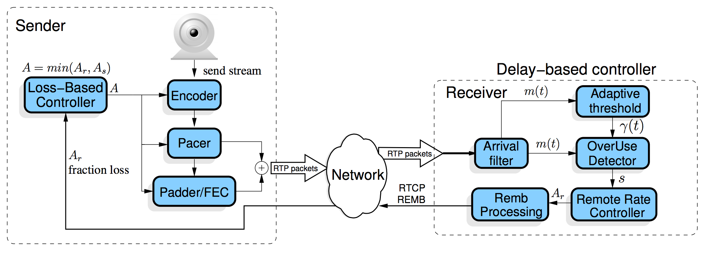
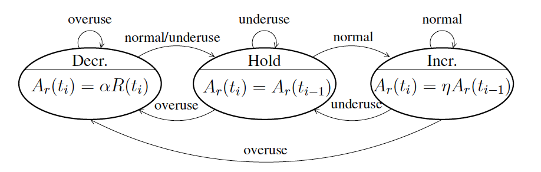
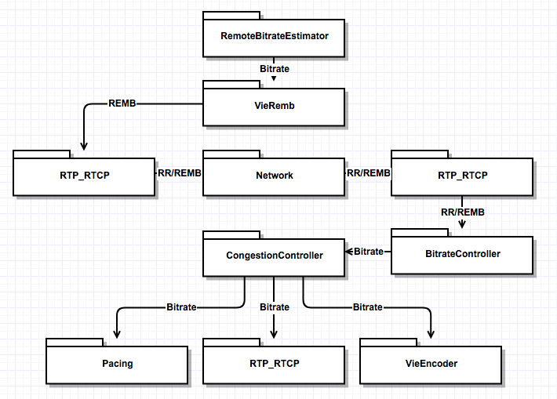

你只是看起来很努力。
影响视频会议质量的因素主要在于视频图像质量和传输时延。视频图像质量对于视频会议的影响不在此赘述。视频会议等实时流媒体应用对于实时性的要求很高，实时性要求我们必须要有较低的时延（时延敏感）。影响时延的因素包含：
- 媒体数据在收发端的处理速度
- 网络拥塞
网络拥塞是本文的研究重点，TCP协议拥有完善的拥塞控制机制，UDP则没有在拥塞控制方面有所规定。由于目前大多实时流媒体应用都是基于UDP传输，所以高效的拥塞控制算法是保证实时流媒体应用QoS的重要手段。
基于丢包的TCP协议无法满足实时流媒体应用的低时延需求。
WebRTC里针对拥塞控制，采用了谷歌拥塞控制算法（Google Congestion Control，GCC），该算法包含两部分：发送端基于丢包的码率控制和接收端基于延迟的码率控制。这两种部分都是通过调节数据发送端码率来达到拥塞控制的目的。GCC算法架构如下：
发送端基于丢包的码率控制
发送端的码率控制是根据丢包率来计算预期的发送码率，丢包率的信息包含在接收到的RTCP报告报文中。计算公式如下，其中
接收端基于延迟的码率控制
发送端的码率控制是根据延迟来计算预期的发送码率，计算出来的码率信息会通过RTCP REMB报文反馈给发送端。计算公式如下，其中η=1.05，α=0.85，
如GCC算法结构图所示，基于延迟的码率控制包含五个模块：Arrival-time Filter、Overuse Detector、Remote Rate Controller、Adaptive Threshold、Remb Processing。GCC论文中给出了这五个模块的关系：
The remote rate controller is a finite state machine in which the state of
is changed by the signal produced by the over-use detector based on the output of the arrival-time filter. The adaptive threshold block dynamically sets the threshold used by the over-use detector. The REMB Processing decides when to send a REMB message based on the value of the rate . Finally, it is important to notice that is upper bounded by 1.5${R}{r}({t})$.
Arrival-time Filter
Arrival-time Filter模块用来计算网络延迟
根据该图，我们可以得出
Overuse Detector
Overuse Detector根据Arrival-time Filter计算出的网络延时overuse、normal、underuse。下图表明Overuse Detector是如何工作的：
产生overuse、normal、underuse三种信号的条件如下：
- overuse:
> and keep 100ms - underuse:
< - and keep 100ms - normal: -
< <
Remote Rate Controller
Remote Rate Controller模块根据上文提到的接收端码率计算公式来计算接收端预估码率。该模块是个无线状态机，其状态变动如下图所示：
结合上文中的公式，我们可以得出：
- 当
s=overuse，预估码率降低为接收码率的85%，处于decrease状态; - 当
s=underuse，预估码率保持和上次预估码率一样，处于hold状态； - 当
s=normal，预估码率上升为上次预估码率的105%，处于increase状态。
Adaptive Threshold
Adaptive Threshold模块用来使算法适应延迟变化的灵敏性。
Remb Processing
Remb Processing模块用于通知发送端来自接收端预估的码率。该码率通过RTCP REMB报文反馈给发送端。正常情况下，该报文每隔1s发送一次，但如果
最终码率计算
一旦发送端接收到RTCP报告报文，或是接收到携带接收端预估码率
WebRTC拥塞控制模块
WebRTC中实现了Google GCC算法，该实现包含发送端和接收端两部分。发送端负责发送端码率预估和计算最终目标码率；接收端负责接收端码率预估和统计丢包信息，并通过REMB报文和RTCP RR反馈给发送端。其总体模块图如下：
